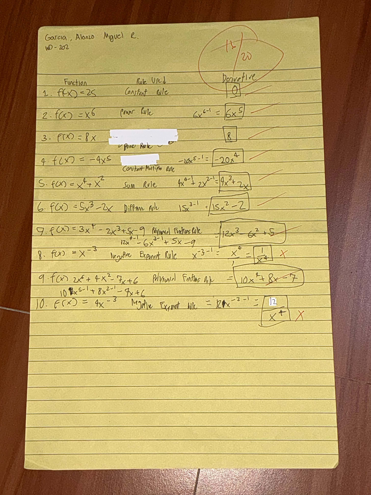
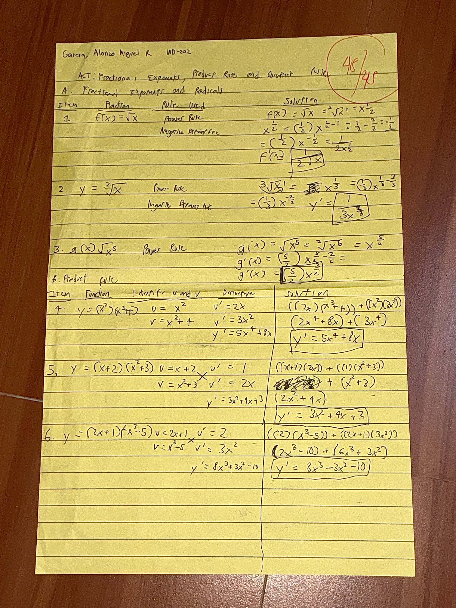
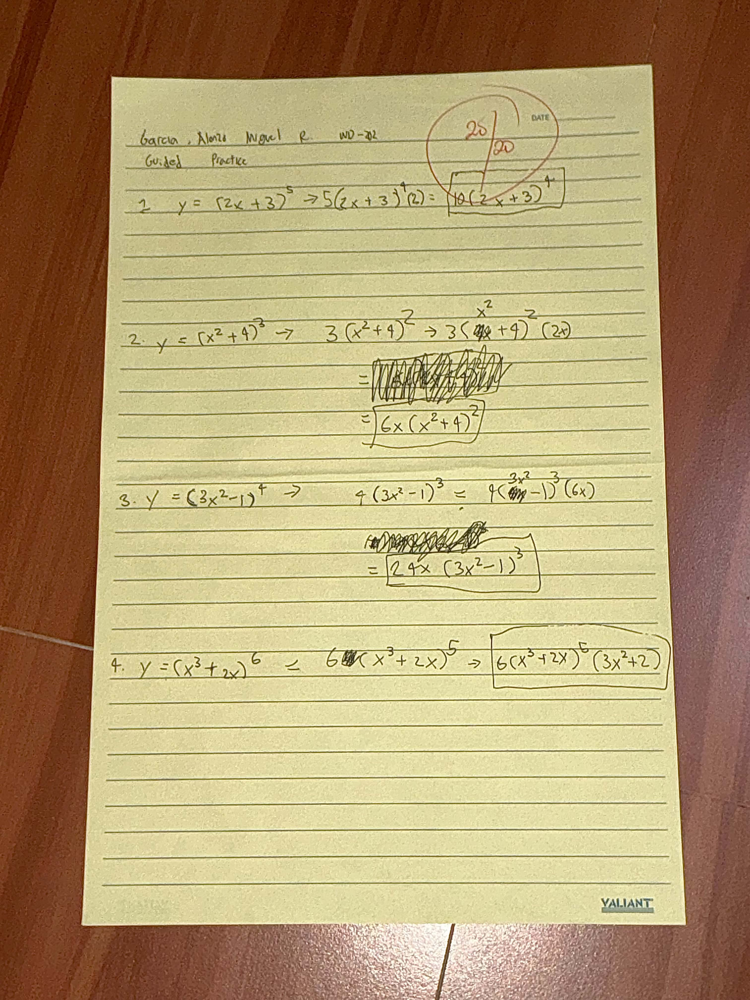
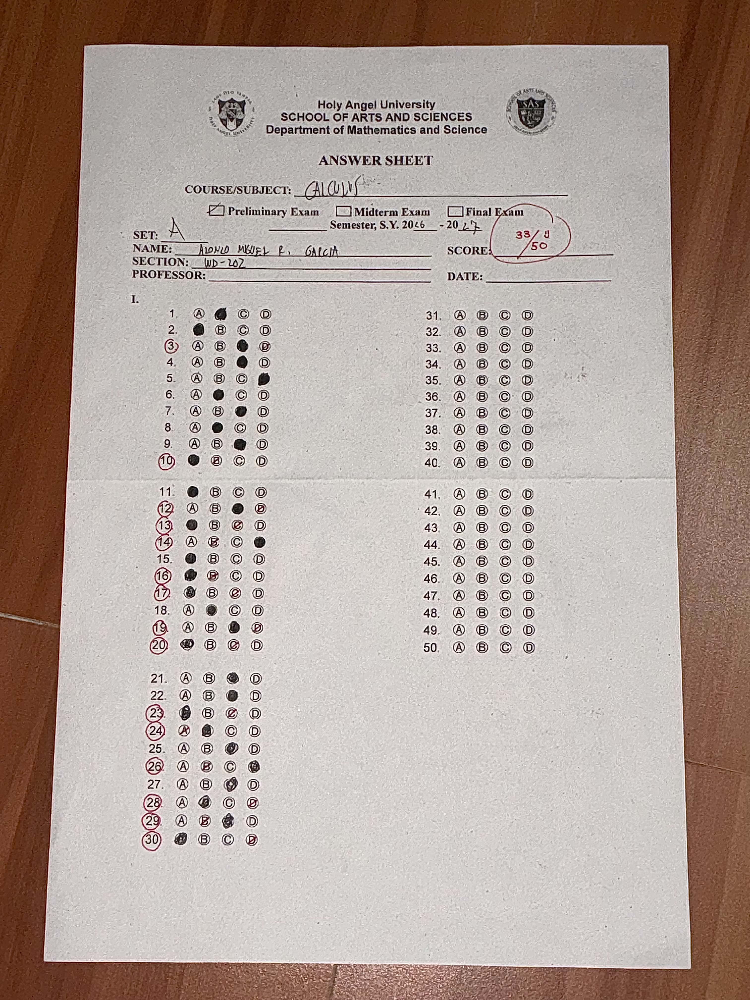
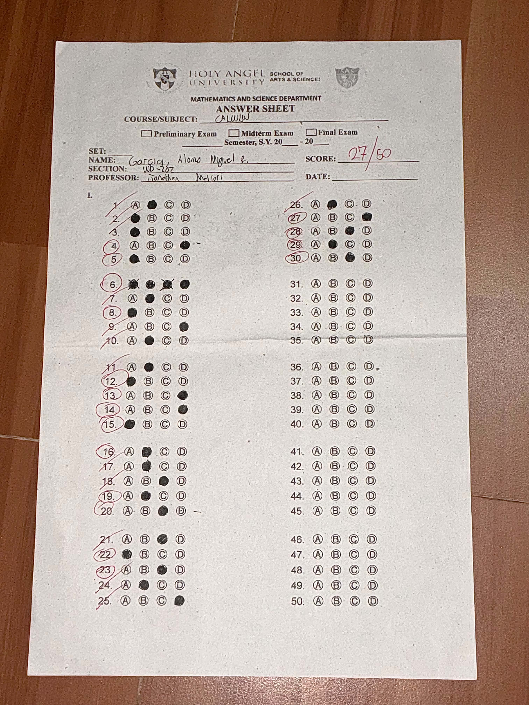
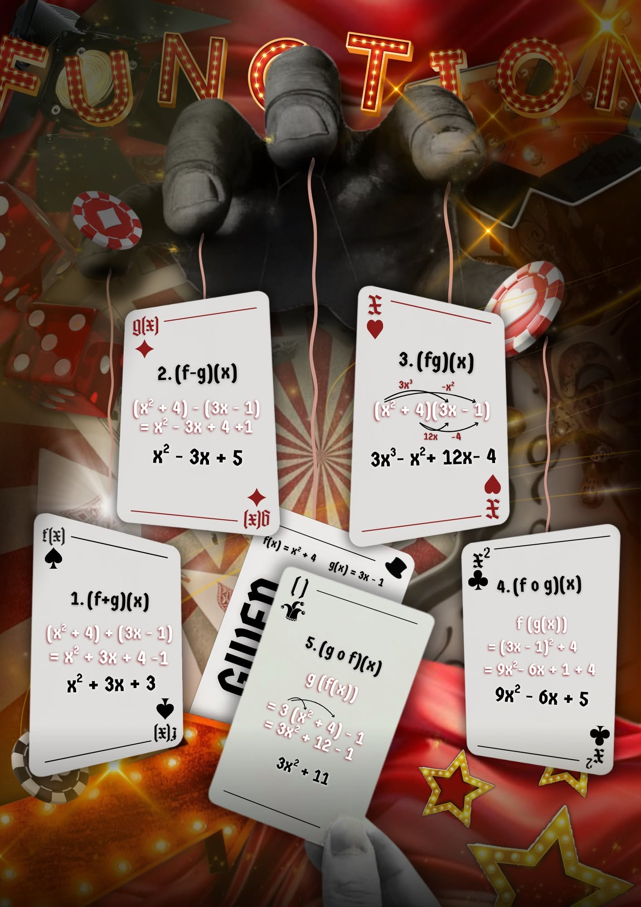
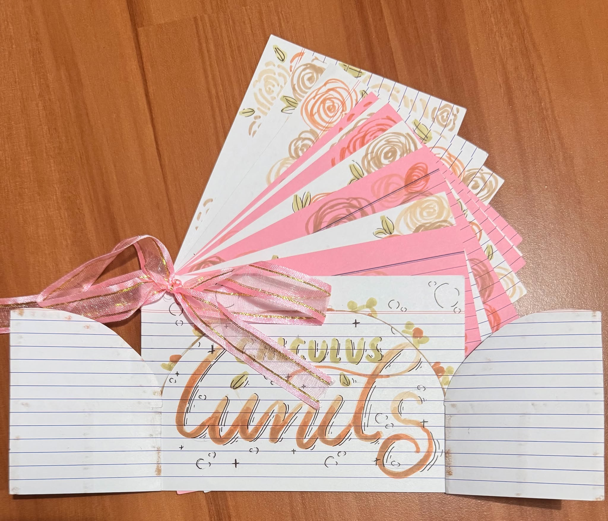
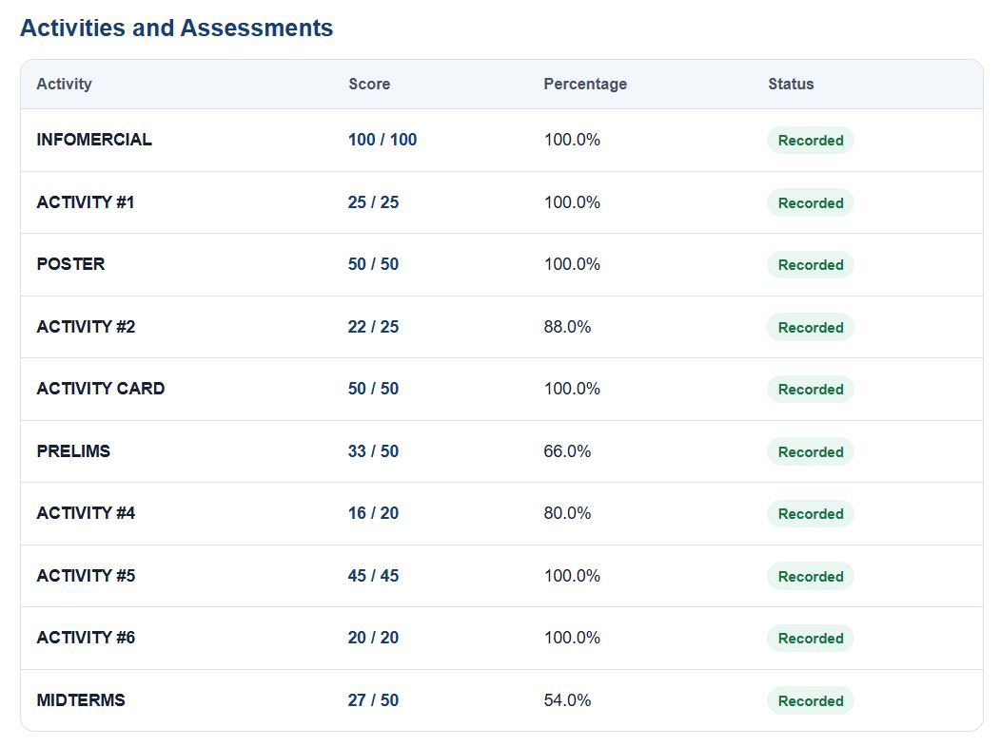

Calculus Through a Developer's Eyes
Welcome to my Calculus E-Portfolio! Here you will find my activities, examinations, projects, and documentation.
Course & Student Meta
Student: Alonzo Miguel R. Garcia
Subject: CALC-IT
Instructor: Jonathan Santos Mallari
Block: WD - 202
About Me
A brief glimpse into my learning journey and challenges.
Hello! I'm Alonzo Miguel R. Garcia :)
Formerly an ABM student but now a sleep-deprived IT student bridging mathematical theory with modern software development. This portfolio documents my progress in calculus from foundational limit theorems to real-world rate applications and algorithmic optimization.
Artifacts
Targeted exercises and problem sets completed throughout the term.
Given: f(x) = 2x + 3 and g(x) = x - 1
1. Add: (f + g)(x) = (2x + 3) + (x - 1) = 3x + 2
2. Compose (f ∘ g)(x):
• Plug g(x) into f(x)
• f(x - 1) = 2(x - 1) + 3
• Result = 2x + 1
Operations on Functions
Topic: Functions, Polynomials, and Function Operations
Practiced combining functions through arithmetic operations and nested compositions. I initially found function composition tricky to organize, but working through this activity helped ground my understanding of how fundamental operations set up complex equations later on.
To solve these, just combine parts that match when adding or subtracting. For composition, take the whole inside formula and stuff it into x of the outside formula, then tidy up the numbers.
Note: Lost the paper of this activity :(
Find: lim (x → 2) [ (x² - 4) / (x - 2) ]
Step 1: Try direct plug-in → 0/0 (Indeterminate)
Step 2: Factor top → (x - 2)(x + 2) / (x - 2)
Step 3: Cancel out (x - 2) → lim (x → 2) (x + 2)
Step 4: Plug in x = 2 → 2 + 2 = 4
Evaluate each Limit
Topic: Limits and Limits at Infinity
Evaluated limits using direct substitution, factoring, and rationalization. I struggled at first with indeterminate forms and radical expressions, but repeatedly solving these helped build my intuition for function behavior as inputs approach specific values or infinity.
Try plugging the number directly into x first. If you get 0/0, factor the top or bottom to cancel out the zero part, then plug the number back in to get your answer.
Note: Lost the paper of this activity aswell :(

Applying Basic Derivative Rules
Topic: Basic Derivative Rules
Applied core differentiation formulas including the power, constant, sum, and difference rules. Although mixing up the power rule with negative exponents caused a few errors initially, mastering these shortcuts made differentiation significantly faster than using limits.
For power rule, bring the exponent down to the front as a multiplier and minus 1 from the power. If there is a plain constant number with no x, it just turns into zero.

Fractional Exponents, Product and Quotient Rule
Topic: Fundamentals of Differential Calculus & Basic Rules
Converted radicals into fractional exponents and applied product and quotient rules. I found the Quotient Rule especially challenging due to long algebraic numerator expansions, which taught me the importance of meticulous step-by-step organization.
Rewrite square roots as fractional powers first. For fractions, use the memory trick: (bottom × derivative of top) minus (top × derivative of bottom), all divided by the bottom squared.

Find each Derivative
Topic: Chain Rule
Focused on breaking down composite functions using the chain rule. Identifying the inner versus outer function felt confusing on multi-layered terms initially, but practice helped me systematically apply it with confidence.
Take the derivative of the outside part first while leaving the inside stuff untouched. Then multiply that whole thing by the derivative of the inside part.
Examinations
Major term assessments and evaluated problem solutions.
Prelims Examination

Midterms Examination

Calculus & IT Projects
Creative output and software applications bridging mathematics with programming.

Calculus Infographic Poster
This poster shows algebraic operations on functions, which means taking two functions and combining them to form a new one. It highlights five fundamental ways to combine them: adding them together, subtracting one from the other, multiplying them, and performing function composition in two different orders by plugging one rule into the other. I learned here how to collaborate remotely with my groupmates via canva by using the group and lock tools to avoid bothering each other's work.

Activity Index Cards
Limits help us figure out what value a math equation is heading toward, even when plugging in the number directly causes a problem like dividing by zero. When direct entry gives an impossible answer like 0/0, we use simple limit rules to fix it. First, we try the Direct Substitution Rule by plugging the number straight in. If that breaks, we use the Factoring and Cancellation Rule to simplify the formula and clear out the problem parts. We can also use basic properties like the Sum, Difference, Product, and Constant Rules to break complicated equations into easier steps. Overall, limits are important because they give us a safe way to deal with undefined math problems, laying the foundation for all of calculus.
Optimization Video Demonstration
Our group video shows how calculus is used in Information Technology and computer science through a fun escape-room story. It demonstrates how derivatives help create smooth animations in web design and guide AI decision-making, while integrals help calculate movement and positions in computer simulations. It also explains how math graphs help build interactive charts using tools like D3.js, while helping optimize network speed, algorithm efficiency, and energy use in data centers.
CALCULUS STUDENT PORTAL
📊 Grade Portal - Total: 388 / 435 (89.2%)

Final Reflection
Personal takeaways and analytical growth during the term.
Coming from an ABM background in senior high school, my math background was focused on accounting, finance, and economics. Switching to an IT program was a big shock for me because calculus was never part of the ABM curriculum, and I never had the chance to take pre-calculus.
At first, I was able to handle basic operations of functions because of what I learned from discrete mathematics in my first year. But when we started topics like limits and derivatives, I got really confused. I did not understand what limits were for or how to evaluate them, and figuring out rates of change with derivatives felt completely new and tough.
Luckily, my seatmate was a former STEM student who guided me every time I felt stuck. She patiently explained the steps whenever I was confused. Without her help, I probably would have failed the class.
Through this experience, I realized that learning calculus was not just about solving formulas on paper. Its real purpose was to train my brain to think critically, step back, and solve complex problems. Overcoming these challenging math topics helped build the logical mindset I need to analyze code and solve problems in programming.